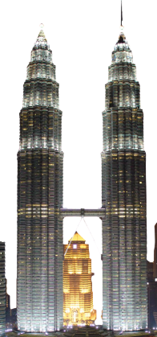
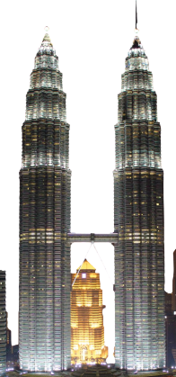

Let's discover the our country

Located between two and seven degrees north of the Equator, Malaysia is formed by 13 states – Kelantan, Terengganu, Pahang, Johor, Melaka, Negeri Sembilan, Selangor, Perak, Pulau Pinang, Kedah, Perlis, Sabah and Sarawak; and three Federal Territories – Kuala Lumpur, Putrajaya, and Labuan. Sabah, Sarawak and Labuan are located in East Malaysia, while others are in Peninsular Malaysia.
With an area of approximately 329,847 square kilometres, and warm tropical climate with temperatures ranging from 23°C to 32°C, Malaysia houses an infinite range of exciting tourism products throughout the year for visitors to explore and enjoy.
Read the full story
The history of Malaysia started in the early 15th century with the establishment of the Melaka Sultanate. The country achieved independence on 31 August 1957 as the Federation of Malaya. Malaysia was formed in 1963 with the entry of Sabah and Sarawak.
Manufacturing constitutes the largest component of Malaysia’s economy, while tourism and primary commodities, namely petroleum, palm oil and timber, are also major contributors to the country’s economy.
Read the full story 

Malaysia is a fascinating country with a vibrant multicultural population. Besides the Malays and the native groups, immigrants from China, India, Indonesia and other parts of the world have all contributed to the multi-racial composition of its population.
Based on statistics from the Department of Statistics Malaysia, the country’s population in 2020 is estimated at 32.7 million people. Out of the 29.7 million citizens, the Bumiputera (Malays and Orang Asli or indigenous peoples) comprises 69.6 percent of the population, the Chinese (22.6 percent), and Indians (6.9 percent), while others (1.0 percent).
The country’s evolution into a cultural melting pot is evident in its unique blend of religions, traditions, festivals, languages, food, and many more. Its cultural diversity can also be largely attributed to the country’s long and ongoing interactions with the world and colonial rule by the British, the Portuguese and the Dutch. The country’s evolution into a cultural melting pot is evident in its unique blend of religions, traditions, festivals, languages, food, and many more. Its cultural diversity can also be largely attributed to the country’s long and ongoing interactions with the world and colonial rule by the British, the Portuguese and the Dutch.
Read the full story